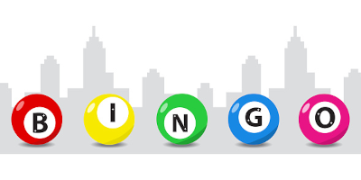

<div style="height: 400px">
    <div uib-carousel active="active" interval="$ctrl.myInterval" no-wrap="$ctrl.noWrapSlides">
        <div uib-slide ng-repeat="slide in $ctrl.slides track by slide.id" index="slide.id" style="height: 400px">
        
        <div class="carousel-caption" style="padding-bottom:100px;">
            </img>
            <h2>{{slide.text}}</h2>
        </div>
        </div>
    </div>
</div>